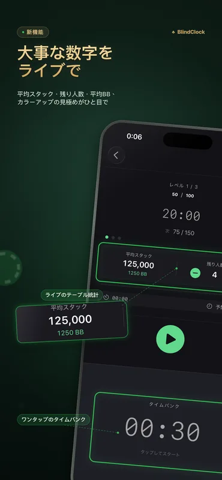
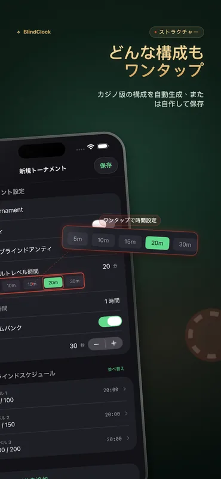
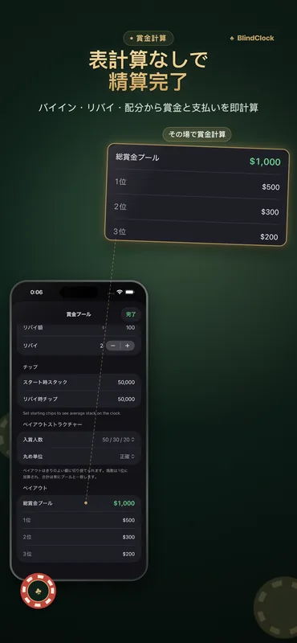

ホストに必要なもの、すべて。
ホームゲームからクラブのトーナメントまで——画面を消しても正確、テーブルの向こうからでもしっかり読める。
正確なトーナメントタイマー
レベルの一時停止、再開、スキップが自由自在。バックグラウンドでも正確で、強制終了しても大丈夫——中断したところからそのまま再開できます。
ブラインドストラクチャージェネレーター
参加人数、チップ、目標時間を入力するだけ——休憩を含むカジノ仕様のきれいなストラクチャーがワンタップで完成。
ペイアウト計算機
バイイン、リバイ、賞金の分配をその場で計算——スプレッドシートなしで夜の精算が完了します。
タイムバンク
設定可能なタイムバンクで、プレイヤーに考える時間を追加。警告表示とサウンドも完備。
Live Activity & Dynamic Island
現在のレベルはロック画面と Dynamic Island に常時表示。充電中の iPhone では、StandBy がフルスクリーンのトーナメントクロックに変わります。
iPad テーブルディスプレイ
iPad を横向きにすれば、左右にブラインド情報を配した巨大なカウントダウンに——テーブル全員が一目で読め、画面も消えません。
テンプレート共有
どんなトーナメントも .blindclock ファイルとして書き出して、AirDrop で仲間に送るだけ——相手はワンタップで同じストラクチャーをそのまま読み込めます。
iCloud 同期
トーナメントのテンプレートが iPhone と iPad の間で自動的に同期——すべての人に無料。
実際の画面



ブラインドストラクチャーの例
きれいなストラクチャーの目安:ターボなら約 1.5 時間、標準的なホームゲームは約 3 時間、ディープスタックは 4.5 時間以上。BlindClock のジェネレーターは、人数・チップ・目標時間に合わせたストラクチャーをワンタップで作ります。
| レベル | ターボ · 15 分 | スタンダード · 20 分 | ディープ · 30 分 |
|---|---|---|---|
| 1 | 25 / 50 | 25 / 50 | 25 / 50 |
| 2 | 50 / 100 | 50 / 100 | 50 / 100 |
| 3 | 100 / 200 | 75 / 150 | 75 / 150 |
| 4 | 200 / 400 | 100 / 200 | 100 / 200 |
| 5 | 300 / 600 | 150 / 300 | 150 / 300 |
| 6 | 500 / 1000 | 200 / 400 | 200 / 400 |
| 7 | — | 300 / 600 | 250 / 500 |
| 8 | — | 400 / 800 | 300 / 600 |
| 9 | — | 500 / 1000 | 400 / 800 |
| 開始スタック | 5,000 | 5,000 | 10,000 |
表記はスモールブラインド / ビッグブラインドです。4〜5 レベルごとに 10 分の休憩を——ジェネレーターが自動で配置します。
バージョン2.1の新機能
- ライブのテーブル統計 — 平均スタック、残り人数、平均スタックのビッグブラインド換算を、クロック画面で各レベルごとにライブ表示。
- カラーアップの見極めがひと目で — 本気の主催者が見る数字——いつカラーアップするか、いつディールを話すか、トーナメントの実際のペース。脱落者はタップで1人減らせます。全員無料。
- 起動が速く、より洗練 — 刷新された起動画面と、アプリ全体の細かな改善。
BlindClock Pro
無料版だけでフル機能——タイマー、Live Activity、ジェネレーター、ペイアウト、同期、そしてカスタムトーナメント最大 5 件まで使えます。Pro なら一度の購入でこの上限が永久に解除され、すべてのデバイスで利用できます。
- カスタムトーナメント無制限
- 一度きりの買い切り
- 広告なし、サブスクなし
- すべてのデバイスで利用可